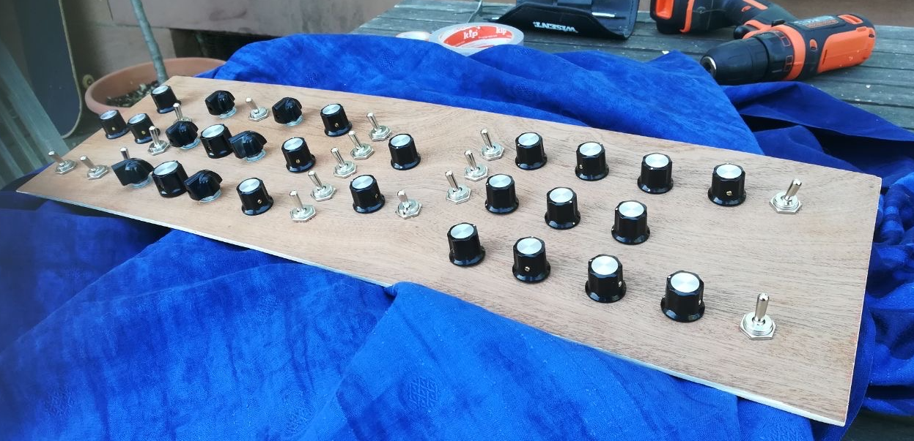
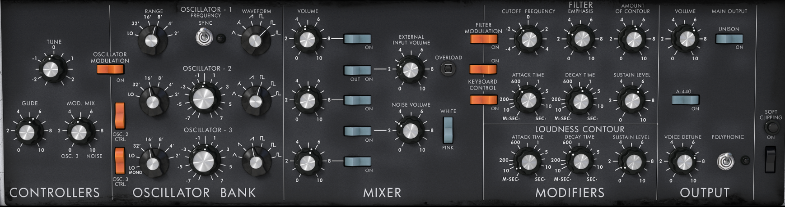
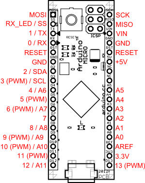
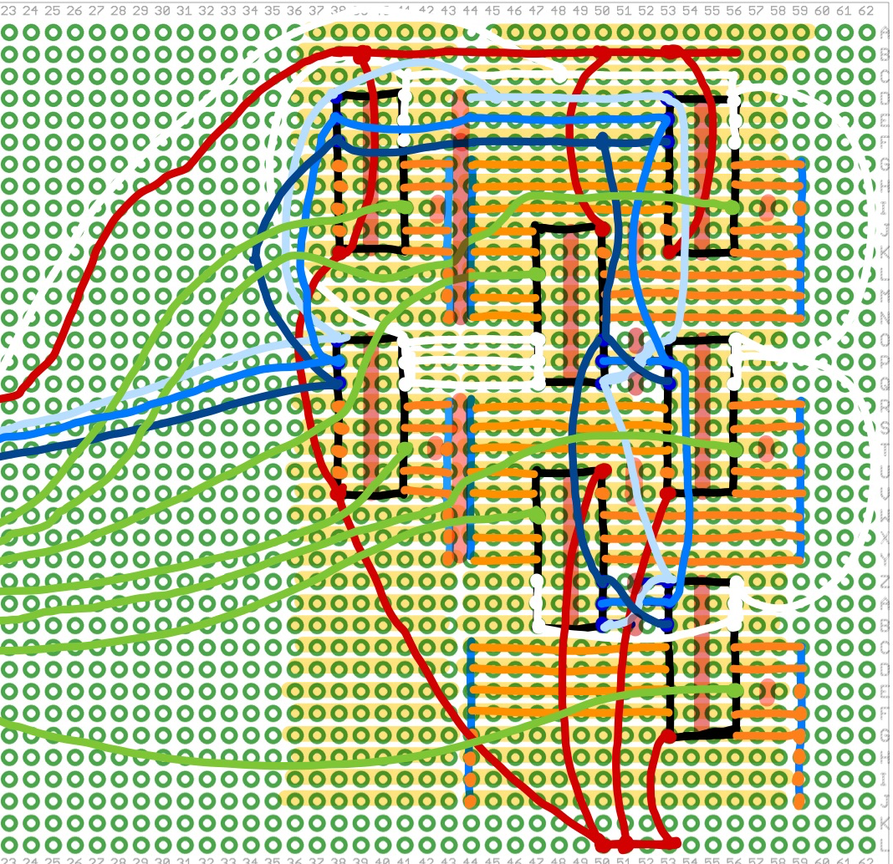
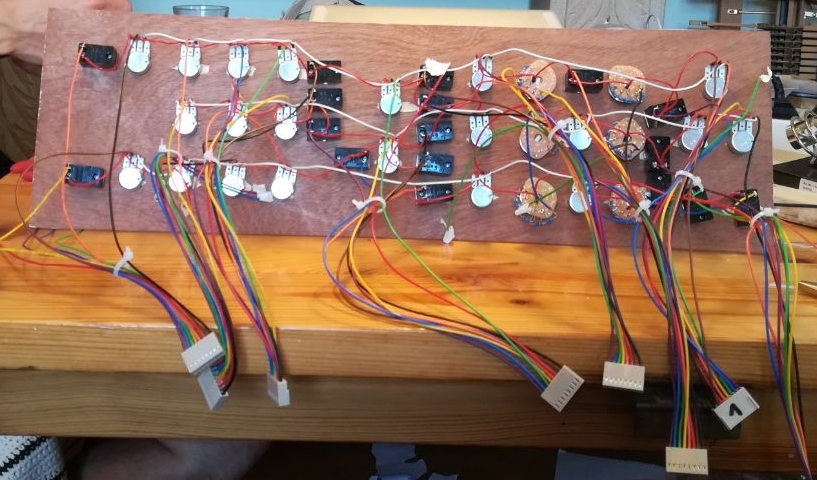
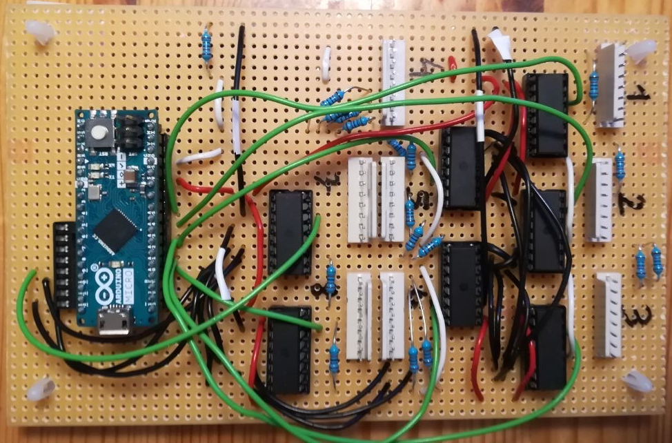
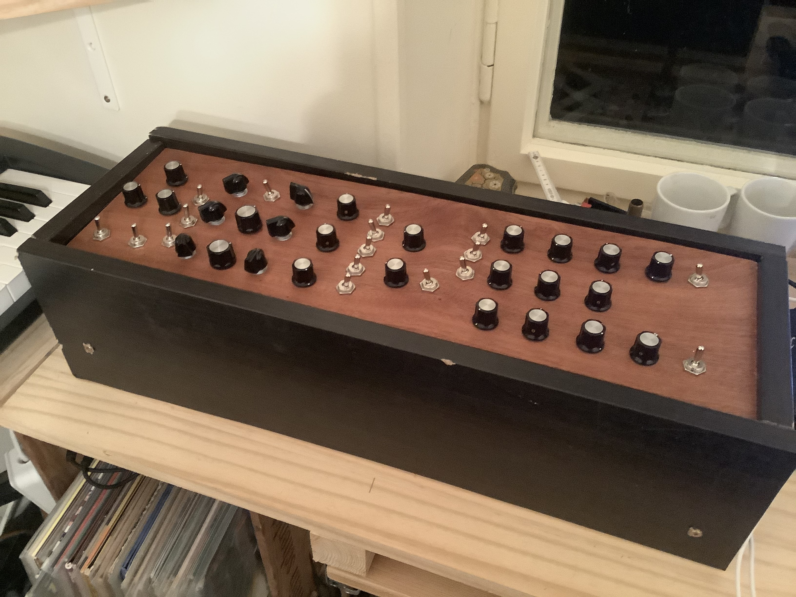

Building a Minimoog MIDI Controller
June 11, 2020
Last week, a friend a I built a MIDI Controller for the Arturia Mini V3 VST:

Front Panel Controls
At first, we identified the different 44 controls we needed:
- 21 potentiometers (with 2 21mm and 19 19mm bakelit knobs)
- 6 rotary switches (with chicken head knobs)
- 17 flip switches
We decided to omit the following rather useless controls:
- A440 rocker switch
- soft clipping switch + button
- all keyboard controls
- flip switch + overload leds
Also, we decided to use flip switches only + we added 2 extra flip switches below the 3 pots on the left.
This is the front panel with all the pots and switches in place:

for comparison:

MIDI Brain
To read the positions of all controls, we ended up using the Arduino Micro:

- it has a ATmega32U4 microcontroller, which makes it usable as a USB device
- it has up to 12 analog inputs and up to 20 digital inputs
Analog Input Multiplexing
As we have 44 controls and only 12 analog inputs, we used seven cd4051 ics:

- pins 6 7 & 8 can be connected to ground
- pin 16 is connected to 5V
- the "channel in" pins are connected to the controls
- via the select pins a b and c, we can control which "channel in" is routed to the "com out". This is done by splitting the three digits of a binary number (000-111) to the three select pins.
- by constantly looping through all inputs, we can read all 8 controls in a short amount of time
- this "trick" is also called time multiplexing, which makes the cd4051 a multiplexer
- so with the 12 analog inputs of the arduino, we can connect up to 12x8 = 96 controls
The Board
To connect all 44 controls with the multiplexers to the arduino, I drew this board plan:

- the copper strips go from left to right
- black boxes: cd4051 multiplexers
- blue vertical lines: 8 pole plug jacks
- red: 5V
- white: ground
- shades of blue: select bits a b and c
- red vertical marks: copper cuts
- green: output cables
By rotating the middle row of ics by 180 degrees, we can spare some cables for ground and the select pins.
After soldering it together, the board looked like this:

Problems
As this was our first real electronics project, we ran into some unforseen problems.
Problem 1: Mirroring
- After the plan was made, we started using it on the copper side (top image) to solder the 16 pin jacks and the plug jacks.
- When we were done soldering, we realized that if we now attach the ics from the plastic side (down image), they will be mirrored, having wrong pin placements!
- Workaround: To fix the problem, we painstakingly bent all the ic legs to the other side to "mirror" them...
- Future Learning: Use two plans, where one is the mirrored version of the other, for both sides of the board
Problem 2: Empty Inputs
- Another thing that we realized too late was all the multiplexers inputs must be connected to the circuit to make them work
- Workaround: We connected all empty inputs via 10k pull up resistors to ground
- Future Learning: It's better to use up as much inputs as possible
Wiring the controls

- the middle pins of each pot + one of the pins of each switch are connected to ic inputs
- all other pins of the switches + one of the outer pot pins are connected to 5V
- all remaining pins are connected to ground
- all the 5V pins of the switches are connected to ground with a 10k resistor
- we transformed the rotary switches to potentiometers by connecting the outer pins via resistors
For the switches and the empty inputs (see Problem 2), we added the resistors directly on the board, before the plugs:

- Future Learning: Add the resistors directly to the 5V pin
Programming the Arduino
The controls can be identified like this:
const int NControls = 44;
int connected[] = {
184, // polyphonic switch
185, // volume poti
186, // unison switch
187, // voice detune poti
191, // osc3 volume poti
193, // ext volume switch
195, // keyboard ctrl 1 switch
196, // amp attack poti
197, // filter mod switch
198, // osc1 switch
201, // osc2 tune poti
203, // osc1 range rotary switch
204, // noise volume poti
205, // osc2 switch
206, // osc3 switch
207, // noise switch
208, // osc2 range rotary switch
211, // vcf cutoff poti
213, // vcf decay poti
214, // osc2 vol poti
215, // osc1 vol poti
216, // osc2 waveform rotary switch
217, // osc3 waveform rotary switch
218, // vcf emphasis poti
221, // external volume poti
223, // keyboard ctrl 2 switch
224, // osc1 frequency sync switch
225, // osc3 tune poti
226, // osc1 waveform rotary switch
227, // osc3 range rotary switch
228, // white/pink switch
231, // effect 2 switch
232, // effect 1 switch
233, // osc2 ctrl switch
234, // master tune poti
235, // osc modulation switch
236, // glide poti
237, // mod mix poti
238, // osc3 ctrl switch
274, // vcf sustain poti
276, // vcf contour poti
277, // amp sustain poti
275, // amp decay poti
194 // vcf attack poti
};
- The first two digits are the analog input of the ic (a0 - a5 = 18 - 23, a9 = 27)
- The third digit is where the control is connected to the ic (1-8)
For easier access, we can seperate the two numbers into two arrays:
int analogInput[NControls]; // holds aX for every index
int selectByte[NControls]; // holds select byte for every index (controls ic)
void setup() {
for(byte i = 0; i < NControls; i++) {
analogInput[i] = floor(connected[i]/10);
selectByte[i] = connected[i]%10;
}
}
In the loop function, we can now read all the voltages:
void loop() {
for(byte i = 0; i < NControls; i++) { // loop through all connected controls
// select correct byte for current control
digitalWrite(10, bitRead(selectByte[i],0));
digitalWrite(11, bitRead(selectByte[i],1));
digitalWrite(12, bitRead(selectByte[i],2));
int voltage = analogRead(analogInput[i]); // 0-1023
voltageToMidi(voltage, i);
}
}
Now we can transform the raw voltage value to MIDI messages:
int midiCh = 9;
int cc = 1;
int voltageChangeThreshold = 8;
int TIMEOUT = 300;
unsigned long PTime[NControls] = {0}; // previous time the voltage changed (more than threshold)
int midiPState[NControls]; // previous sent midi value for control i
int voltagePState[NControls]; // voltage of control i at last midi send
void voltageToMidi(int voltage, int i) {
if(abs(voltage-voltagePState[i]) > voltageChangeThreshold) {
PTime[i] = millis();
}
if((millis() - PTime[i]) < TIMEOUT) {
// here the voltage changed significantly and "stayed there" for more than 300 ms
int midiValue;
if(isInverted(connected[i])) {
midiValue = map(voltage, 0, 1023, 127, 0); // flipped last 2 numbers to invert
} else if(connected[i] == 227) {
midiValue = rotaryMidi(voltage, 6, 7, 1);
} else {
midiValue = map(voltage, 0, 1023, 0, 127);
}
// only send midi if it changes (0-127)
if(midiPState[i] != midiValue) {
controlChange(midiCh, cc+i, midiValue); // send midi
MidiUSB.flush(); // force send midi immediately
voltagePState[i] = voltage; // remember last voltage where midi was sent
midiPState[i] = midiValue; // update last sent midi
}
}
}
- to compensate for voltage jitter, we ignore voltage changes that are lower than a threshold of 8
- if the voltage change is above the the theshold, the time is remembered
- for 300ms after a significant voltage change, the voltage is mapped to a midi value (0-127)
- if the calculated midi value is different from the last, the value is sent out, using MIDIUSB lib
- isInverted inverts the mapping for controls with inverted voltages (depends on wiring of 5v and ground)
- rotaryMidi maps the 6 step rotary switch to the target 7 step midi value of osc3 range (ignoring the first step)
show complete code
Conclusion
After 4 days of soldering, and learning a lot about electronics, the basic controller was finished. I also built a prototype case:

Huge thanks goes out
- !! Goetz Müller Dürholt for his DIY Midi Controller Series
- Gustavo Silveira for the mapping idea
- Mr Fid for the rotary switch idea
I already know that this was not the last MIDI controller to build for myself. Next time, I will try to build a controller for the Prophet V (maybe also including keys).
TBD
- build proper case
- add labels
- minor midi mapping issues